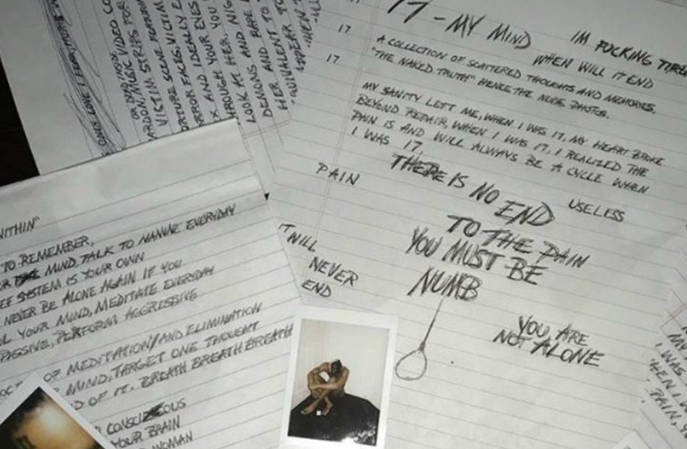

Acerca de
Carrera Musical:
XXXTentacion comenzó a ganar reconocimiento en 2015 después de lanzar su canción "Look at Me!", que se convirtió en un éxito viral en SoundCloud.
Desde muy joven, XXXTentacion mostró un talento innato para la música. Comenzó a escribir y grabar sus propias canciones a la edad de 14 años, utilizando su música como una forma de expresar sus emociones y luchas personales. Su estilo musical abarcaba una amplia gama de géneros, incluyendo el rap, el R&B, el rock y el lo-fi.
En 2017, XXXTentacion lanzó su primer álbum de estudio, "17", que fue aclamado por la crítica y alcanzó el número 2 en el Billboard 200. El álbum presentaba canciones introspectivas y emotivas que abordaban temas como la depresión, la soledad y la angustia emocional. Convirtiendo a XXXTentacion en una figura influyente en la música contemporánea.

Es su primer álbum de estudio y consta de 11 canciones. El título del álbum hace referencia a la edad que tenía XXXTentacion en el momento de su lanzamiento.
Ese mismo año, lanzó su álbum de estudio "?" que incluía éxitos como "Sad!" y "Moonlight". El álbum alcanzó el puesto número 1 en el Billboard 200.
El disco consta de 18 canciones y cuenta con colaboraciones de artistas como Joey Bada$$, Travis Barker, Pnb Rock, Judah, Rio Santana y Carlos Andrez.